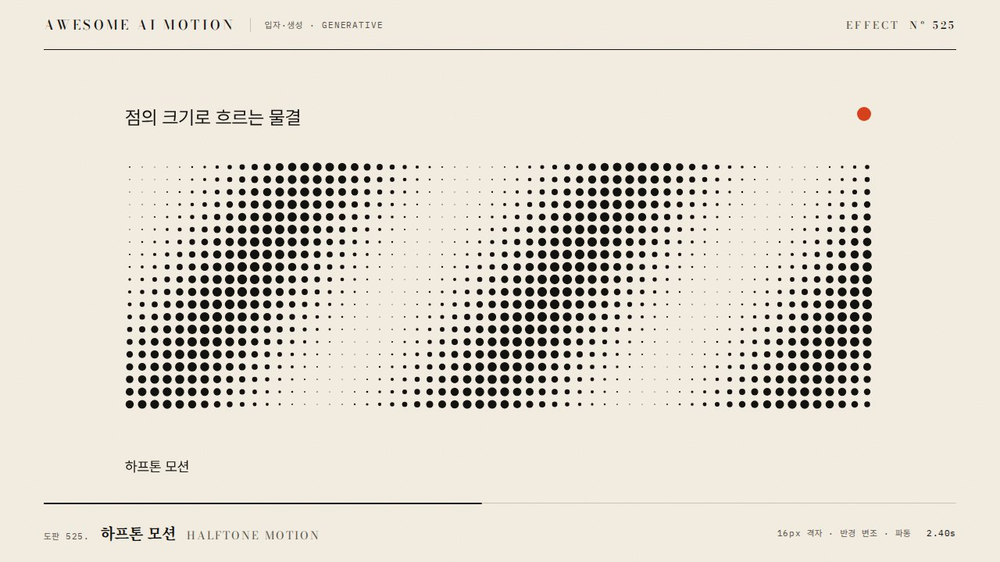

제한된 색과 규칙적 점 패턴으로 이미지를 표현하고 색 단계가 변하며 움직이는 효과An image is drawn with limited colors and regular dot patterns, and the color levels animate.
이미지가 2색 Bayer 디더로 시작해 1.2초 동안 색 단계 2, 4, 8, 16으로 늘어나 원본으로 돌아온다
디더 패턴을 매 프레임 바꿔 화면이 지글거리게 하거나, 색 단계를 한 번에 크게 건너뛴다
기본값은 클립에 쓴 값Defaults are the values used in the clip
| 항목PARAM | 기본DEFAULT | 범위RANGE | 메모NOTE |
|---|---|---|---|
| 지속 | 1200ms | 800~2000ms | 색 단계 증가 |
| 행렬 | Bayer 8x8 | 4x4/8x8 | 고정 임계 맵 |
| 색 단계 | 2에서 16 | 2~32 | 단계별 계단식 증가 |
| 셀 크기 | 2px | 1~4px | 픽셀 확대 배율 |
| 팔레트 | 흑백 또는 2색 | 1~4색 | 브랜드 색 지정 가능 |
// fragment: 임계 맵 M(8x8)/64
float t=bayer8(floor(gl_FragCoord.xy/2.));
float L=dot(texture2D(tex,uv).rgb,vec3(.299,.587,.114));
float levels=mix(2.,16.,uProg);
float q=floor(L*(levels-1.)+t)/(levels-1.);
gl_FragColor=vec4(mix(c0,c1,q),1.);그대로 붙여 넣는다Paste as is
<이미지>에 애니메이션 디더링을 넣어줘. Bayer 8x8 임계 맵으로 셀 크기 2px, 처음 2색(흑백)에서 시작해 1.2초 동안 색 단계를 2, 4, 8, 16으로 계단식(steps 4)으로 올려서 원본에 가까워지게 해. 임계 맵은 고정이고 매 프레임 바꾸지 마. paused 타임라인으로 uProg를 구동해.
Add animated dithering to <image>. Use a Bayer 8x8 threshold map at 2px cells, starting in 2 colors (black and white) and stepping through 2, 4, 8, and 16 color levels over 1.2s with steps(4) so it approaches the original. Keep the threshold map fixed and never change it per frame. Drive uProg from a paused timeline.
<파일>에 animated-dither 셰이더를 구현해. Bayer 8x8, 셀 2px, 색 단계 2에서 16, 1200ms steps(4). 0초, 0.4초, 0.8초, 1.3초를 캡처해 점 패턴이 유지되면서 색 단계만 늘어나는지, 프레임 사이 패턴이 흔들리지 않는지, 1.3초에 원본 톤에 가까운지 확인해.
Implement an animated-dither shader in <file>: Bayer 8x8, 2px cells, levels 2 to 16, 1200ms steps(4). Capture at 0s, 0.4s, 0.8s, and 1.3s to verify the dot pattern persists while only levels increase, the pattern does not shimmer between frames, and 1.3s is close to the source tone.
HyperFrames · ReelForge · Scrolline

개념 출처와 라이선스. 구현은 이 레포에서 새로 씀Concept sources and licenses. Implementations are original to this repo